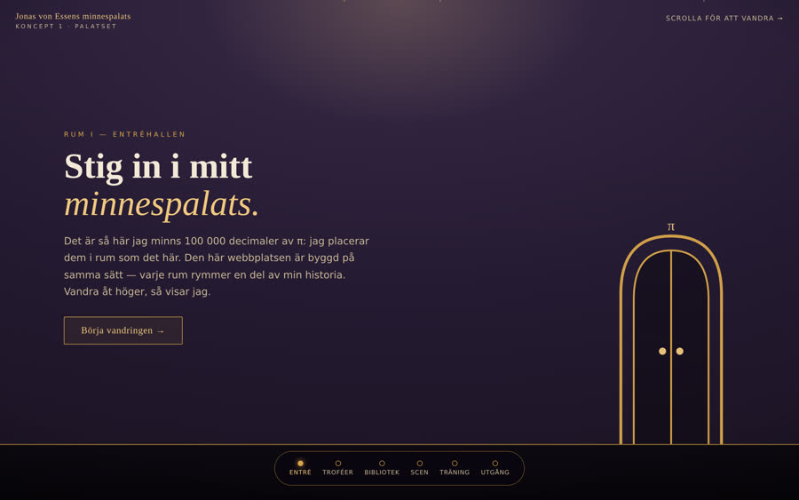

1

Minnespalatset
Webbplatsen är ett palats — och du vandrar genom det.
Sex rum i sidled: entréhall, trofésal, bibliotek, scen, träningsrum och utgång. Innehållet hänger som tavlor och står som möbler. Levande ljus, dammkorn och en minikarta som visar var du är.
Det unika: sidan använder själva tekniken Jonas lär ut — besökaren bygger omedvetet ett minnespalats av innehållet.